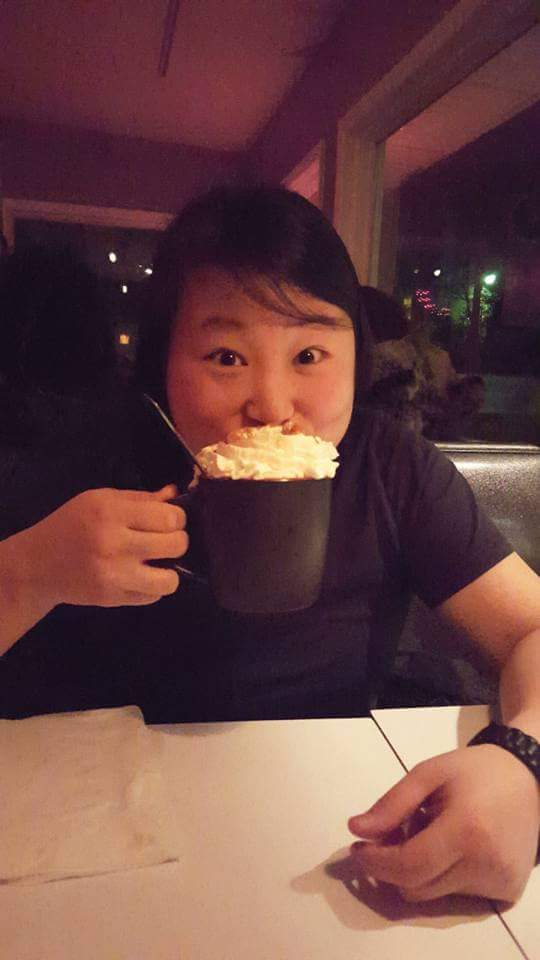

About Me
Hello World! My name is Isabell, but my close friends call me Izzy. Welcome to my portfolio! Just to tell you a little about myself: My favorite color is navy blue. In fact, you’ll see me wearing this color almost everyday. I am a big foodie. I love exploring new cuisines and trying various restaurants. Watching football is one of my favorite activities to do with my friends. We tend to argue more than agree on calls and plays. As for music taste, It varies from rap to alternative rock. My educational background was originally in biology, but I decided to change my career and pursue web development. I hope you enjoy browsing through my portfolio showcasing projects that I have worked on and feel free to contact me!
Connect with Me